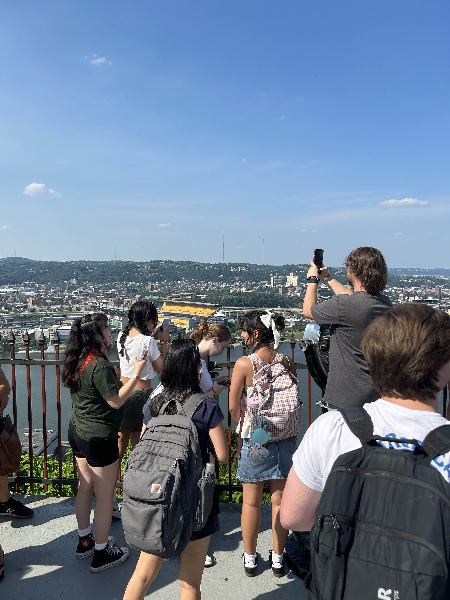
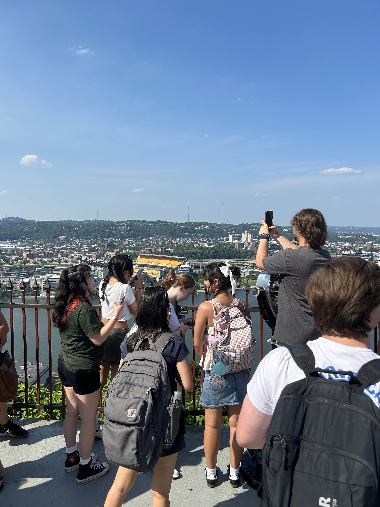

My Time At CMU
Carnegie Mellon University was a really eye-opening experience for me. Before the program, I knew I wanted to go into tech, but I wasn’t sure if coding was something I actually wanted to do. Being there helped me figure that out. I learned a lot about computer science and cybersecurity, but I also learned a lot about myself and the kind of work I want to be doing in the future.
A big part of what made the program so memorable was the people. The group I was in was amazing, everyone was friendly and supportive, which made the experience so much better. On top of that, spending the summer in Pittsburgh was a lot of fun. I got to explore the city, try out different restaurants, see the Pirates play, and even watch fireworks by the water. It was also nice that it was a paid fellowship, because it gave me the freedom to really enjoy everything without stressing.
Overall, CMU gave me the clarity I was looking for about my future in tech, and it also gave me some great memories along the way. I’m really grateful for the opportunity, and I’m excited to see where my journey takes me next.
 
